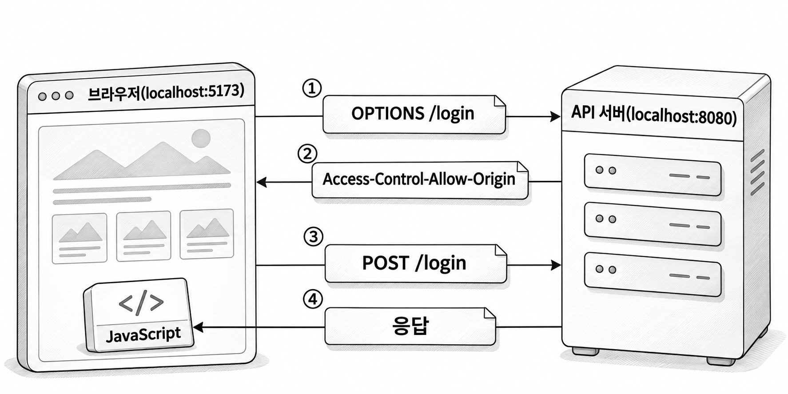
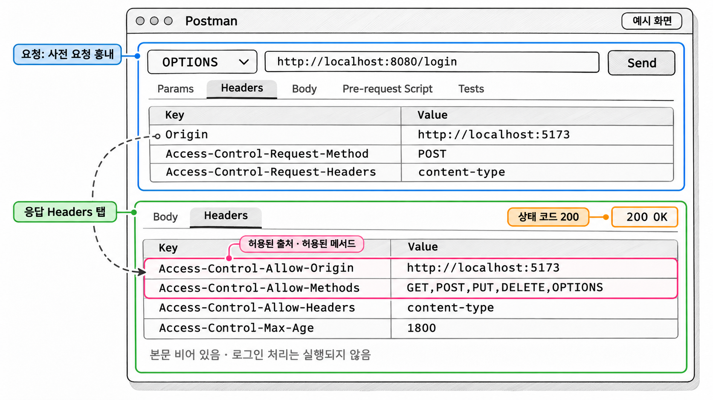
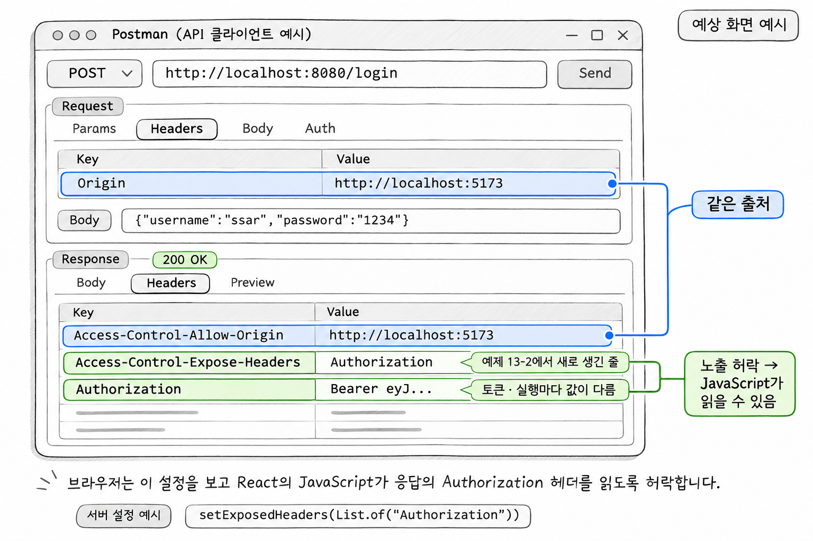

13장. CORS란?
1. CORS의 개념
1.1 출처와 동일 출처 정책
12장까지는 Postman으로만 API를 호출했습니다. 후속 과정에서는 React로 만든 화면이 이 API를 호출합니다. React 개발 서버는 http://localhost:5173에서, 블로그 API는 http://localhost:8080에서 실행되므로 둘은 출처가 다릅니다. 브라우저는 출처가 다른 서버에서 온 응답을 화면의 JavaScript에 바로 넘겨주지 않습니다.
출처(origin)는 주소의 프로토콜 · 호스트 · 포트를 묶은 것입니다. 이 세 가지가 모두 같아야 같은 출처입니다. 경로(/login, /api/boards)는 출처에 들어가지 않습니다.
| 비교할 주소 | http://localhost:5173과 같은 출처인가 | 이유 |
|---|---|---|
http://localhost:5173/boards | 같다 | 경로만 다르다 |
http://localhost:8080/login | 다르다 | 포트가 다르다 |
https://localhost:5173 | 다르다 | 프로토콜이 다르다 |
http://127.0.0.1:5173 | 다르다 | 호스트 이름이 다르다 |
브라우저는 웹 페이지의 JavaScript가 다른 출처의 서버에 요청을 보내 응답을 읽는 것을 기본으로 막습니다. 이 제한을 동일 출처 정책(Same-Origin Policy)이라고 합니다. 사용자가 어떤 사이트를 열었을 때, 그 페이지의 스크립트가 사용자 몰래 다른 사이트의 데이터를 읽어 가지 못하게 하는 보안 장치입니다.
동일 출처 정책이 그대로 적용되면 localhost:5173의 React 화면은 localhost:8080의 응답을 읽을 수 없습니다. 서버가 이 제한을 풀어 주는 규칙이 CORS(Cross-Origin Resource Sharing, 교차 출처 리소스 공유)입니다. 서버는 응답에 Access-Control-Allow-Origin 같은 헤더를 붙여, 응답을 읽어도 되는 출처를 브라우저에 알립니다. 브라우저는 이 헤더를 보고 JavaScript에 응답을 넘길지 정합니다.
동일 출처 정책과 CORS 검사는 모두 브라우저가 합니다. Postman은 브라우저가 아니므로 CORS 설정이 없어도 응답을 그대로 받습니다. 12장까지 Postman으로 호출할 때 아무 문제가 없었던 것도 이 때문입니다. CORS 설정이 빠졌다는 사실은 화면을 붙이는 순간에야 드러납니다.
1.2 사전 요청(preflight)과 OPTIONS
브라우저는 어떤 요청이 서버의 데이터를 바꿀 수 있다고 판단하면 그 요청을 바로 보내지 않습니다. 먼저 OPTIONS 메서드로 서버에 이 요청을 보내도 되는지 묻습니다. 이 확인 요청을 사전 요청(preflight request, 프리플라이트 요청)이라고 하고, 그 뒤에 보내는 원래 요청을 본 요청이라고 부릅니다.
사전 요청에는 본문도 Authorization 헤더도 실리지 않습니다. 대신 앞으로 보낼 본 요청의 정보가 다음 헤더에 담깁니다.
| 사전 요청 헤더 | 담기는 내용 | 예 |
|---|---|---|
Origin | 요청을 보내는 화면의 출처 | http://localhost:5173 |
Access-Control-Request-Method | 본 요청에 쓸 HTTP 메서드 | POST |
Access-Control-Request-Headers | 본 요청에 실을 헤더 이름 | content-type |
서버가 이 출처 · 메서드 · 헤더를 허용한다고 답하면 브라우저는 본 요청을 보냅니다. 허용하지 않으면 본 요청은 아예 서버로 가지 않습니다.

모든 요청에 사전 요청이 붙지는 않습니다. GET · HEAD · POST 가운데 하나이고 기본 헤더만 쓰는 요청은 사전 요청 없이 바로 갑니다. 이때 Content-Type도 폼 형식(application/x-www-form-urlencoded) · multipart/form-data · text/plain 가운데 하나여야 합니다. 이런 요청을 단순 요청(simple request)이라고 합니다. 단순 요청에도 CORS 검사는 적용됩니다. 응답에 허용 헤더가 없으면 브라우저는 그 응답을 JavaScript에 넘기지 않습니다.
이 책의 API는 대부분 사전 요청을 거칩니다. 회원가입과 로그인은 JSON 본문을 보내므로, Content-Type: application/json 때문에 사전 요청이 먼저 갑니다. 토큰을 실을 요청은 Authorization 헤더 때문에, 글 수정 · 삭제는 PUT · DELETE 메서드 때문에 사전 요청이 붙습니다.
2. CORS 설정
2.1 CorsConfigurationSource 빈 등록
Spring Security를 쓰는 애플리케이션에서는 CORS 설정을 SecurityFilterChain에 연결합니다. 사전 요청에는 Authorization 헤더가 없기 때문입니다. 14장에서 만들 인증 필터처럼 토큰을 검사하는 필터가 사전 요청을 먼저 받으면, 인증되지 않은 요청으로 보고 거절합니다. 그래서 http.cors()로 CORS 처리를 켭니다. 그러면 Spring Security가 필터 체인 앞쪽에 CorsFilter를 두고, 사전 요청은 인증 검사보다 먼저 처리됩니다.
CORS 설정은 세 객체가 나누어 맡습니다.
| 객체 | 맡는 일 |
|---|---|
CorsConfiguration | 허용할 출처 · 메서드 · 헤더 같은 규칙을 담는다 |
UrlBasedCorsConfigurationSource | 어떤 주소에 어떤 규칙을 적용할지 등록한다 |
CorsConfigurationSource | 요청이 오면 그 요청에 맞는 규칙을 찾아 준다(위 클래스가 구현하는 인터페이스) |
규칙을 주소에 등록한 CorsConfigurationSource를 빈으로 만들고, 그 빈을 http.cors()에 넘깁니다.
기본 문법
@Bean
public CorsConfigurationSource corsConfigurationSource() {
CorsConfiguration config = new CorsConfiguration();
// config에 허용 규칙 적기
UrlBasedCorsConfigurationSource source = new UrlBasedCorsConfigurationSource();
source.registerCorsConfiguration("주소패턴", config);
return source;
}http.cors(cors -> cors.configurationSource(corsConfigurationSource()));registerCorsConfiguration()의 주소 패턴에 /**를 쓰면 모든 주소에 같은 규칙이 적용됩니다. 블로그 API는 주소마다 규칙을 다르게 둘 이유가 없으므로 /** 하나만 등록합니다.
http.cors() 안에서 corsConfigurationSource()를 일반 메서드처럼 호출해도 객체가 하나 더 생기지는 않습니다. @Configuration 클래스 안의 @Bean 메서드 호출은 스프링이 가로채기 때문입니다. 그래서 2장에서 본 것처럼 컨테이너에 이미 등록된 같은 빈이 돌아옵니다.
2.2 허용 출처(localhost:5173) · 메서드 · 헤더
CorsConfiguration에는 무엇을 허용할지 적습니다. 블로그 API에는 다음 세 가지 규칙을 둡니다.
| 메서드 | 넣는 값 | 응답 헤더 | 뜻 |
|---|---|---|---|
setAllowedOrigins() | http://localhost:5173 | Access-Control-Allow-Origin | 응답을 읽어도 되는 출처 |
setAllowedMethods() | GET · POST · PUT · DELETE · OPTIONS | Access-Control-Allow-Methods | 본 요청에 쓸 수 있는 HTTP 메서드 |
addAllowedHeader() | * | Access-Control-Allow-Headers | 요청에 실어 보낼 수 있는 헤더 |
허용 출처는 React 개발 서버 주소 http://localhost:5173 하나만 둡니다. 출처는 프로토콜과 포트까지 정확히 적어야 합니다. 끝에 /를 붙이거나 http를 빼면 브라우저가 보내는 Origin 값과 맞지 않습니다. 메서드는 이 책에서 쓰는 네 가지에 사전 요청용 OPTIONS를 더합니다. 헤더는 *로 모두 허용합니다. 그러면 화면이 Content-Type과 Authorization을 자유롭게 실을 수 있습니다.
예제 13-1 — CORS 허용 규칙 등록하기
이어서: 예제 12-6
파일명: src/main/java/com/newtenco/blog/core/SecurityConfig.java
package com.newtenco.blog.core;
import org.springframework.context.annotation.Bean;
import org.springframework.context.annotation.Configuration;
import org.springframework.security.config.annotation.web.builders.HttpSecurity;
import org.springframework.security.crypto.bcrypt.BCryptPasswordEncoder;
import org.springframework.security.crypto.password.PasswordEncoder;
import org.springframework.security.web.SecurityFilterChain;
import org.springframework.web.cors.CorsConfiguration;
import org.springframework.web.cors.CorsConfigurationSource;
import org.springframework.web.cors.UrlBasedCorsConfigurationSource;
import java.util.List;
// 보안 설정을 모은 클래스. 안의 @Bean 메서드가 돌려준 객체를 스프링 빈으로 등록한다
@Configuration
public class SecurityConfig {
// 비밀번호를 BCrypt 해시로 바꾸고(encode) 비교하는(matches) 도구
@Bean
public PasswordEncoder passwordEncoder() {
return new BCryptPasswordEncoder();
}
// CORS 규칙: React 화면(localhost:5173)이 이 서버에 요청하고 응답을 읽을 수 있게 허용한다
@Bean
public CorsConfigurationSource corsConfigurationSource() {
CorsConfiguration config = new CorsConfiguration();
// 응답을 읽어도 되는 출처. 프로토콜 · 호스트 · 포트까지 정확히, 끝에 / 없이 적는다
config.setAllowedOrigins(List.of("http://localhost:5173"));
// 본 요청에 쓸 수 있는 메서드. OPTIONS는 브라우저가 먼저 보내는 사전 요청용이다
config.setAllowedMethods(List.of("GET", "POST", "PUT", "DELETE", "OPTIONS"));
// 요청에 실어 보낼 수 있는 헤더. *이면 Content-Type · Authorization을 모두 허용한다
config.addAllowedHeader("*");
// 위 규칙을 모든 주소(/**)에 적용한다
UrlBasedCorsConfigurationSource source = new UrlBasedCorsConfigurationSource();
source.registerCorsConfiguration("/**", config);
return source;
}
// 요청이 컨트롤러에 닿기 전에 거치는 보안 필터 목록을 만든다
@Bean
public SecurityFilterChain filterChain(HttpSecurity http) throws Exception {
// H2 콘솔 화면이 프레임 안에서 열리도록 같은 서버의 화면은 허용한다
http.headers(headers -> headers.frameOptions(frame -> frame.sameOrigin()));
// 위의 CORS 규칙을 필터 체인에 연결한다
http.cors(cors -> cors.configurationSource(corsConfigurationSource()));
// 화면(세션 · 로그인 폼)을 전제로 한 기본 기능은 JSON API에 필요 없으므로 끈다
http.csrf(csrf -> csrf.disable());
http.formLogin(form -> form.disable());
http.httpBasic(basic -> basic.disable());
// 주소별 접근 규칙. 아직은 모든 요청을 연다. 14장에서 주소마다 규칙을 정한다
http.authorizeHttpRequests(auth -> auth.anyRequest().permitAll());
// 위에서 정한 설정대로 필터 체인을 만들어 돌려준다
return http.build();
}
}실행 결과
Postman은 CORS를 검사하지 않습니다. 하지만 브라우저가 붙이는 헤더를 직접 넣으면 서버가 돌려주는 CORS 헤더를 확인할 수 있습니다.
먼저 사전 요청을 흉내 냅니다. 메서드를 OPTIONS로 바꾸고, http://localhost:8080/login에 다음 헤더 세 개를 넣어 보냅니다.
Origin: http://localhost:5173
Access-Control-Request-Method: POST
Access-Control-Request-Headers: content-type상태 코드 200과 함께 응답 헤더에 다음 줄이 보입니다. 본문은 비어 있고, 로그인 처리는 실행되지 않습니다.
Access-Control-Allow-Origin: http://localhost:5173
Access-Control-Allow-Methods: GET,POST,PUT,DELETE,OPTIONS
Access-Control-Allow-Headers: content-typeAccess-Control-Allow-Headers에는 *가 아니라 요청에서 물어본 content-type이 그대로 돌아옵니다. 모든 헤더를 허용한다는 규칙에 따라, 물어본 헤더를 허용한다고 답한 것입니다. 브라우저가 이 답을 얼마나 기억할지는 Access-Control-Max-Age 헤더로 정합니다. 이 예제에서는 정하지 않았으므로 이 헤더가 붙지 않고, 브라우저는 자기 기본값만큼만 기억합니다.
이번에는 Origin을 허용 목록에 없는 http://localhost:4000으로 바꿔 보냅니다. 상태 코드 403과 함께 본문에 다음 문자열만 옵니다.
Invalid CORS request이 403은 CorsFilter가 보낸 응답입니다. 요청이 Controller까지 가지 않았으므로 본문도 Resp 모양이 아닙니다. 브라우저였다면 본 요청을 보내지 않고 콘솔에 CORS 오류를 띄웁니다.

생성형 예시 · 실제 실행 안 함
Origin 헤더 없이 보낸 요청은 CORS 요청이 아니므로 CorsFilter가 그냥 통과시킵니다. 그래서 지금까지 Postman으로 보낸 요청은 예전과 똑같이 동작합니다.
2.3 노출 헤더(exposedHeaders)로 Authorization 읽게 하기
CORS로 응답 읽기를 허용해도 브라우저는 응답 헤더를 JavaScript에 모두 보여 주지 않습니다. 기본으로 읽을 수 있는 헤더는 Content-Type · Content-Length · Cache-Control처럼 안전하다고 정해 둔 몇 개뿐입니다. 이런 헤더를 CORS 안전 목록 응답 헤더(CORS-safelisted response header)라고 합니다. Authorization은 이 목록에 없습니다.
12장에서는 로그인 응답의 토큰을 Authorization 응답 헤더에 담았습니다. 예제 13-1 상태에서 Origin: http://localhost:5173을 넣어 POST /login을 보내면 로그인은 200으로 성공합니다. Postman 응답에도 Authorization: Bearer ... 헤더가 보입니다. 그런데 브라우저의 JavaScript에서 같은 응답의 Authorization 헤더를 꺼내면 null이 나옵니다. 서버도 Postman도 정상으로 보이기 때문에 원인을 찾기 어렵습니다.
JavaScript가 읽어도 되는 응답 헤더는 서버가 Access-Control-Expose-Headers 응답 헤더로 알려 줍니다. 스프링에서는 CorsConfiguration의 setExposedHeaders()로 이 헤더를 붙입니다.
기본 문법
config.setExposedHeaders(List.of("헤더이름", "헤더이름"));예제 13-2 — 토큰 헤더를 화면에 노출하기
이어서: 예제 13-1
파일명: src/main/java/com/newtenco/blog/core/SecurityConfig.java
package com.newtenco.blog.core;
import org.springframework.context.annotation.Bean;
import org.springframework.context.annotation.Configuration;
import org.springframework.security.config.annotation.web.builders.HttpSecurity;
import org.springframework.security.crypto.bcrypt.BCryptPasswordEncoder;
import org.springframework.security.crypto.password.PasswordEncoder;
import org.springframework.security.web.SecurityFilterChain;
import org.springframework.web.cors.CorsConfiguration;
import org.springframework.web.cors.CorsConfigurationSource;
import org.springframework.web.cors.UrlBasedCorsConfigurationSource;
import java.util.List;
// 보안 설정을 모은 클래스. 안의 @Bean 메서드가 돌려준 객체를 스프링 빈으로 등록한다
@Configuration
public class SecurityConfig {
// 비밀번호를 BCrypt 해시로 바꾸고(encode) 비교하는(matches) 도구
@Bean
public PasswordEncoder passwordEncoder() {
return new BCryptPasswordEncoder();
}
// CORS 규칙: React 화면(localhost:5173)이 이 서버에 요청하고 응답을 읽을 수 있게 허용한다
@Bean
public CorsConfigurationSource corsConfigurationSource() {
CorsConfiguration config = new CorsConfiguration();
// 응답을 읽어도 되는 출처. 프로토콜 · 호스트 · 포트까지 정확히, 끝에 / 없이 적는다
config.setAllowedOrigins(List.of("http://localhost:5173"));
// 본 요청에 쓸 수 있는 메서드. OPTIONS는 브라우저가 먼저 보내는 사전 요청용이다
config.setAllowedMethods(List.of("GET", "POST", "PUT", "DELETE", "OPTIONS"));
// 요청에 실어 보낼 수 있는 헤더. *이면 Content-Type · Authorization을 모두 허용한다
config.addAllowedHeader("*");
// 브라우저 JavaScript가 읽어도 되는 응답 헤더. 기본으로는 Authorization을 읽지 못한다
// 로그인 응답 헤더에 담긴 토큰(12장)을 화면이 꺼낼 수 있게 연다
config.setExposedHeaders(List.of("Authorization"));
// 위 규칙을 모든 주소(/**)에 적용한다
UrlBasedCorsConfigurationSource source = new UrlBasedCorsConfigurationSource();
source.registerCorsConfiguration("/**", config);
return source;
}
// 요청이 컨트롤러에 닿기 전에 거치는 보안 필터 목록을 만든다
@Bean
public SecurityFilterChain filterChain(HttpSecurity http) throws Exception {
// H2 콘솔 화면이 프레임 안에서 열리도록 같은 서버의 화면은 허용한다
http.headers(headers -> headers.frameOptions(frame -> frame.sameOrigin()));
// 위의 CORS 규칙을 필터 체인에 연결한다
http.cors(cors -> cors.configurationSource(corsConfigurationSource()));
// 화면(세션 · 로그인 폼)을 전제로 한 기본 기능은 JSON API에 필요 없으므로 끈다
http.csrf(csrf -> csrf.disable());
http.formLogin(form -> form.disable());
http.httpBasic(basic -> basic.disable());
// 주소별 접근 규칙. 아직은 모든 요청을 연다. 14장에서 주소마다 규칙을 정한다
http.authorizeHttpRequests(auth -> auth.anyRequest().permitAll());
// 위에서 정한 설정대로 필터 체인을 만들어 돌려준다
return http.build();
}
}실행 결과
서버를 다시 실행합니다. Postman에서 POST http://localhost:8080/login의 Headers 탭에 Origin: http://localhost:5173을 넣습니다. 본문에는 샘플 회원의 {"username":"ssar","password":"1234"}를 담아 보냅니다. 상태 코드 200과 함께 응답 헤더에 다음 줄이 보입니다.
Access-Control-Allow-Origin: http://localhost:5173
Access-Control-Expose-Headers: Authorization
Authorization: Bearer eyJ...Authorization 값은 12장에서 본 토큰이며 실행할 때마다 달라집니다. 예제 13-1에서는 Access-Control-Expose-Headers 줄이 없었습니다. 이제 브라우저는 이 줄을 보고 JavaScript가 Authorization 헤더를 읽도록 허락합니다.

생성형 예시 · 실제 실행 안 함
허용 헤더와 노출 헤더는 방향이 다릅니다. addAllowedHeader()는 화면이 서버로 보내는 요청 헤더를 정합니다. setExposedHeaders()는 서버가 화면으로 돌려주는 응답 헤더 가운데 JavaScript가 읽을 수 있는 것을 정합니다. 요청에 Authorization을 실을 수 있다고 해서 응답의 Authorization까지 읽을 수 있지는 않습니다.
이제 React 화면은 로그인 응답 헤더에서 토큰을 읽어 둘 수 있습니다. 14장에서 만들 인증 필터는 화면이 이 토큰을 다음 요청의 Authorization 헤더에 실어 보낸다고 보고 동작합니다. 14장부터 나오는 SecurityConfig 예제에는 모두 이 장의 CORS 설정 줄이 그대로 들어 있습니다.